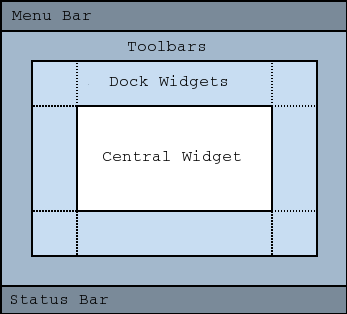
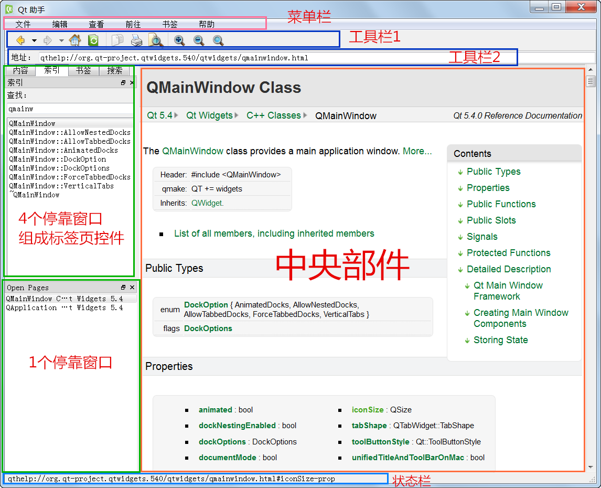
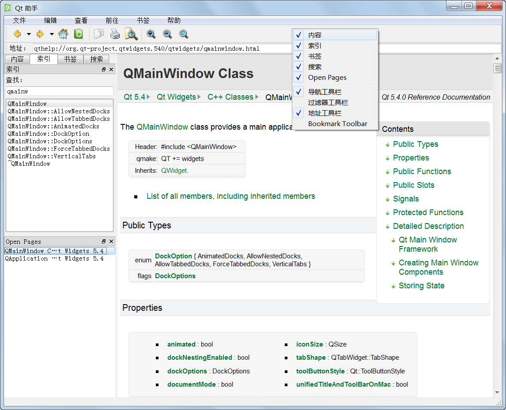
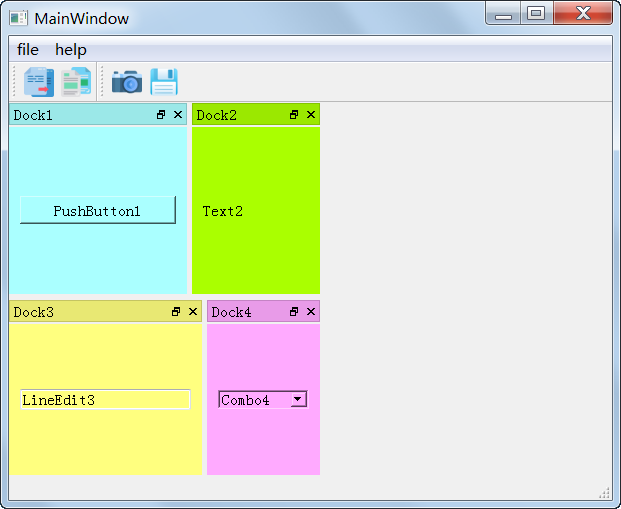
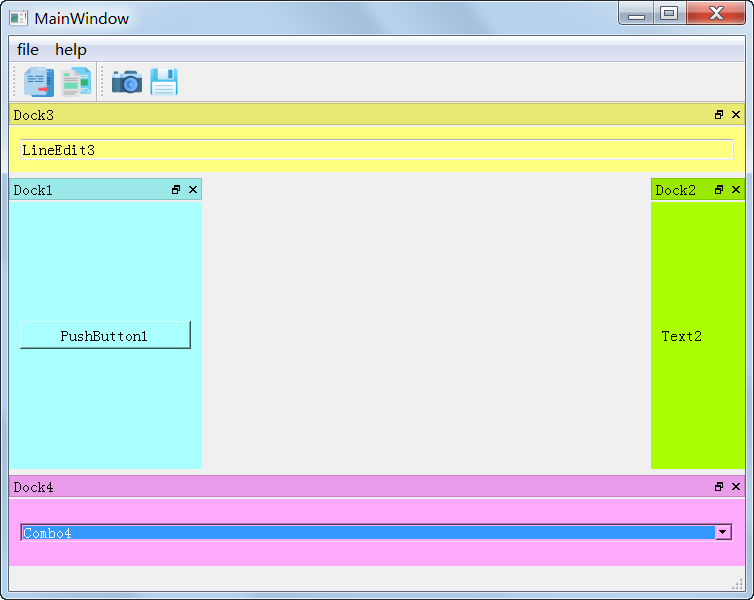
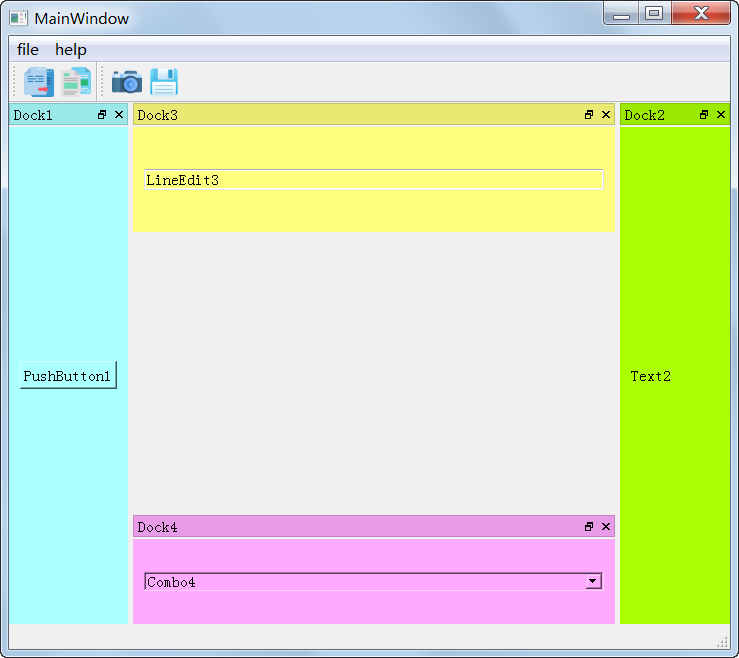

12.1 主窗口和菜单栏
本节介绍 QMainWindow 主窗口类，以及动作 QAction、菜单 QMenu、菜单栏 QMenuBar。一般由多个菜单项动作 QAction
组成一个菜单 QMenu，多个 菜单 QMenu 添加到
QMenuBar，就形成常见的菜单栏完整功能。本节新建一个基于主窗口类看图软件示例，并在后续小节逐步添加组件功能。
12.1.1 主窗口 QMainWindow
主窗口程序是最常见的软件界面，例如 QtCreator、Assistant、Designer，常见的办公软件、画图软件、文本编辑器等等，几乎都属于主窗口
程序。典型的主窗口程序组成如下图所示：

主窗口顶部是菜单栏 Menu Bar，菜单栏最多一个，菜单栏里面可以有多个并排的菜单；
菜单栏下面一般是工具栏 Toolbars，工具栏可以有多个，也可以排多行，可以停靠在四周方位，如果工具栏很多，可以排布一圈；
然后是停靠窗口，停靠窗口也可以有多个，可以停靠在四周，就是第二圈范围，停靠窗口也可以脱离停靠区域，悬浮在主窗口上面，悬浮的停靠窗口可以自由移动位置；
正中间的是中央部件，主窗口程序必须有中央部件，并且是唯一的。QMainWindow 默认是一个程序打开一个文档，就是 SDI
单文档程序（Single Document Interface），如果希望支持一个程序内同时打开多个文档，即 MDI 多文档程序（Multiple
Document Interface），需要将中央部件设置为 QMdiArea 对象。多文档程序下一章介绍，本章只介绍单文档程序。
主窗口最底部的是状态栏，一般显示关于文档或操作的临时信息。
以 Qt Assistant 为例：

Qt Assistant 第一行是菜单栏。
第二行是工具栏 1，第三行是工具栏 2。
左侧上半部分是 4 个停靠窗口组成的标签页控件，左侧下半部分是 1
个停靠窗口，停靠窗口可以并列排布，也可以内嵌组合成标签页控件，还可以悬浮，不依附主窗口停靠区，非常灵活。
中央部件占据最大区域，一般用于显示文档。
最底部是状态栏，显示状态信息，比如上图就是显示链接信息。
下面我们分块介绍 QMainWindow 的功能函数。
（1）构造函数
QMainWindow(QWidget * parent = 0,
Qt::WindowFlags flags = 0)
~QMainWindow()
构造函数第一个参数 parent 是父窗口，一般都是 0，代表是顶级窗口；flags 是窗口标志位，一般用默认的 0 即可。
（2）菜单栏函数
主窗口的最多只有一个菜单栏，一般获取和设置菜单栏的函数如下：
QMenuBar * menuBar() const
void setMenuBar(QMenuBar * menuBar)
QMenuBar 类下面小节介绍，如果没有构造菜单栏，menuBar() 返回空值。
如果希望定制自己的菜单栏，那么可以用下面函数设置定制的菜单栏控件：
QWidget * menuWidget() const
void setMenuWidget(QWidget * menuBar)
menuWidget() 默认和 menuBar() 是一样的，只有定制特殊菜单栏控件时，才会用到 menuWidget() 和
setMenuWidget() 函数。
主窗口程序默认拥有一个特殊的右键菜单，由主窗口程序自动生成，右键菜单生成函数如下：
virtual QMenu * createPopupMenu()
这是个虚函数，QMainWindow 拥有工具栏、停靠窗口时，QMainWindow
自动创建该右键菜单，可以选择显示或隐藏工具栏和停靠窗口，例如右键点击菜单栏、工具栏区域或者停靠窗口标题栏，显示如下右键菜单：

上图右键菜单中，内容、索引、书签、搜索、Open Pages 是 5 个停靠窗口，
导航工具栏、过滤器工具栏、地址工具栏、Bookmark Toolbar 是 4 个工具栏，
菜单项前面的勾选号就是显示该停靠窗口、工具栏，不勾选就是隐藏。
如果希望针对该右键菜单进行定制，可以重载 createPopupMenu()，新建自己的定制菜单，新建菜单对象的归属权会传递给该函数的调用者。
一般用 QMainWindow::createPopupMenu() 默认的右键菜单即可，createPopupMenu()
每次调用都会创建新的菜单对象，但是多次创建的菜单对象中，关于工具栏、停靠窗口的隐藏或显示的菜单项是共用的，相当于多次创建的菜单中菜单项是自动同步的，这样在
不同位置右击显示右键菜单，都能正确显示工具栏、停靠窗口的隐藏或显示状态。
（3）工具栏函数
主窗口可以有多个工具栏，添加工具栏的函数如下：
void addToolBar(Qt::ToolBarArea area,
QToolBar * toolbar)
void addToolBar(QToolBar * toolbar)
QToolBar * addToolBar(const QString & title)
void insertToolBar(QToolBar * before, QToolBar *
toolbar)
第一个添加函数，是在指定工具栏停靠区域，添加一个工具栏 toolbar。
第二个添加函数，等同于 addToolBar(Qt::TopToolBarArea, toolbar)，就是在顶部停靠区域添加工具栏。
第三个添加函数，创建一个标题为 title 新的工具栏，添加到顶部停靠区域，返回值就是新的工具栏对象指针。
第四个插入工具栏函数，就是在 before 工具栏前面插入新工具栏 toolbar。
工具栏停靠区域主要有如下几种：
| 枚举常量 |
数值 |
描述 |
| Qt::LeftToolBarArea |
0x1 |
左侧工具栏区域 |
| Qt::RightToolBarArea |
0x2 |
右侧工具栏区域 |
| Qt::TopToolBarArea |
0x4 |
顶部工具栏区域 |
| Qt::BottomToolBarArea |
0x8 |
底部工具栏区域 |
| Qt::AllToolBarAreas |
ToolBarArea_Mask |
所有区域模板，用于位或 | 、位与 &操作 |
| Qt::NoToolBarArea |
0 |
没有工具栏区域 |
添加的多个工具栏默认都在同一行显示，如果希望换行显示，那么可以插入换行符：
void addToolBarBreak(Qt::ToolBarArea
area = Qt::TopToolBarArea)
void insertToolBarBreak(QToolBar * before)
addToolBarBreak() 是在指定区域 area 现有工具栏末尾添加换行符，添加下一个新工具栏时，就会从下一个新行开始排布。
insertToolBarBreak() 是在 before 工具栏前面加换行符，这样 before 工具栏就会排布在新的行首。
移除工具栏的函数如下：
void removeToolBar(QToolBar * toolbar)
removeToolBar() 根据参数指针 toolbar 从主窗口移除该工具栏，但是注意 toolbar 对象并没有彻底从内存删除，要注意手动
delete toolbar 对象。
删除工具栏换行符函数如下：
void removeToolBarBreak(QToolBar *
before)
removeToolBarBreak() 删除指定工具栏 before 前面的换行符，这样原本以 before
开始的一行工具栏会显示到上面一行工具栏的末尾。
获取工具栏当前停靠位置，使用下面函数：
Qt::ToolBarArea toolBarArea(QToolBar *
toolbar) const
toolBarArea() 返回值与 Qt::ToolBarArea 枚举常量做比较或计算位与值，可以判断工具栏位置，如果工具栏目前没有添加给主窗口，那
么返回值是 Qt::NoToolBarArea。
判断工具栏前面是否有换行符，可以用下面函数：
bool toolBarBreak(QToolBar * toolbar)
const
toolbar 前面紧挨着换行符，就返回 true，否则返回 false。
工具栏有多个工具按钮，可以定制工具按钮显示风格，如下函数：
void
setToolButtonStyle(Qt::ToolButtonStyle toolButtonStyle)
//设置工具按钮风格
Qt::ToolButtonStyle toolButtonStyle() const
//获取工具按钮风格
工具栏按钮风格枚举值如下表所示：
| 枚举常量 |
数值 |
描述 |
| Qt::ToolButtonIconOnly |
0 |
工具栏按钮只显示图标 |
| Qt::ToolButtonTextOnly |
1 |
工具栏按钮只显示文本 |
| Qt::ToolButtonTextBesideIcon |
2 |
工具栏按钮文本显示在图标旁边（右侧） |
| Qt::ToolButtonTextUnderIcon |
3 |
工具栏按钮文本显示在图标下面 |
| Qt::ToolButtonFollowStyle |
4 |
工具栏按钮根据窗口 style() 的风格显示 |
工具栏按钮默认风格是 Qt::ToolButtonIconOnly，只显示图标。
工具栏按钮图标的尺寸大小可以设置，如下函数：
void setIconSize(const QSize &
iconSize) //设置图标尺寸
QSize iconSize() const //获取图标尺寸
对于 Mac OS X 系统，可以设置显示统一标题和工具栏显示风格：
void setUnifiedTitleAndToolBarOnMac(bool
set)
bool unifiedTitleAndToolBarOnMac() const
对于其他操作系统，可以忽略这个 unifiedTitleAndToolBarOnMac 特性。
（4）状态栏函数
主窗口底部可以设置一个状态栏，显示文档或操作的状态信息：
void setStatusBar(QStatusBar *
statusbar)
QStatusBar * statusBar() const
setStatusBar() 参数里如果为 0，就是空指针，那么主窗口会删除状态栏，如果设置了正常的
statusbar，那么状态栏对象的归属权会传递给主窗口，状态栏对象由主窗口管理，主窗口会在合适的时候自动销毁状态栏。
如果没有设置状态栏，statusBar() 返回空值，如果有状态栏，返回正常的状态栏对象指针。
（5）停靠窗口函数
主窗口可以拥有多个停靠窗口，使用下面函数添加停靠窗口：
void addDockWidget(Qt::DockWidgetArea
area, QDockWidget * dockwidget)
void addDockWidget(Qt::DockWidgetArea area, QDockWidget
* dockwidget, Qt::Orientation orientation)
参数 area是停靠窗口初始停靠的位置，dockwidget 是预先创建的停靠窗口，orientation 是停靠窗口的排布方向。orientation
只有两个数值，Qt::Horizontal 是水平排布（0x1），Qt::Vertical 垂直排布（0x2）。
Qt::DockWidgetArea 枚举数值如下：
| 枚举常量 |
数值 |
描述 |
| Qt::LeftDockWidgetArea |
0x1 |
左侧停靠区域 |
| Qt::RightDockWidgetArea |
0x2 |
右侧停靠区域 |
| Qt::TopDockWidgetArea |
0x4 |
顶部停靠区域（上方停靠区域） |
| Qt::BottomDockWidgetArea |
0x8 |
底部停靠区域（下方停靠区域） |
| Qt::AllDockWidgetAreas |
DockWidgetArea_Mask |
四个区域位或，全都有 |
| Qt::NoDockWidgetArea |
0 |
没有停靠区域 |
可以根据显示需要和美观，指定停靠窗口的初始停靠位置，后续用户可以自己拖动停靠窗口的位置。
获取停靠窗口当前停靠位置，使用下面函数：
Qt::DockWidgetArea
dockWidgetArea(QDockWidget * dockwidget) const
如果停靠窗口还没有添加给主窗口，那么返回 Qt::NoDockWidgetArea；如果停靠窗口从停靠状态拖动变为悬浮状态，那么
dockWidgetArea() 返回之前停靠位置的数值，双击悬浮的停靠窗口标题栏，会自动停靠到原来的停靠位置。
将停靠窗口从主窗口移除的函数如下：
void removeDockWidget(QDockWidget *
dockwidget)
dockwidget 从主窗口移除后，还存在内存空间，如果要彻底删除，需要手动 delete dockwidget 对象。
停靠窗口可以设置多种停靠选项，如下函数：
void setDockOptions(DockOptions options)
DockOptions dockOptions() const
默认停靠选项为 AnimatedDocks | AllowTabbedDocks，显示平滑动画、允许多个停靠窗口组合为标签页控件。
详细的停靠选项如下表所示：
| 枚举常量 |
数值 |
描述 |
| QMainWindow::AnimatedDocks |
0x01 |
用于设置停靠平滑动画 animated 属性 |
| QMainWindow::AllowNestedDocks |
0x02 |
用于设置复杂的嵌套停靠（蜂巢式停靠）dockNestingEnabled 属性 |
| QMainWindow::AllowTabbedDocks |
0x04 |
允许标签页式停靠，用户将一个停靠窗口拖动放置到另一个停靠窗口正上方，这时多个停靠窗口堆叠自动组合成一个标签页控件 |
| QMainWindow::ForceTabbedDocks |
0x08 |
强制标签页式停靠，每个停靠区强制只有一个标签页控件显示停靠窗口，这样同一区域不会并排显示停靠窗口。如果设置了
ForceTabbedDocks 选项，那么 AllowNestedDocks 选项就会无效 |
| QMainWindow::VerticalTabs |
0x10 |
多个停靠窗口组合的标签页控件的标签栏垂直显示，就是主窗口左右两侧的标签页控件的标签栏垂直显示，对于顶部和底部的标签页控件没有影响。
不设置该选项时，标签栏默认显示在底部 |
注意大部分选项要在停靠窗口添加给主窗口之前设置，后续添加停靠窗口，效果才能生效。
只有 AnimatedDocks 和 VerticalTabs 可以随时设置都生效，其他的选项应当在添加停靠窗口之前设置。
对于不冲突的选项，用位或 | 运算符可以同时启用多个选项效果。
animated 平滑动画属性对应函数如下：
bool isAnimated() const
void setAnimated(bool enabled)
这个属性控制停靠窗口和工具栏时是否显示平滑动画效果，例如当用户将一个停靠窗口拖动到另一个停靠窗口正上面，动画显示标签页式组合停靠；如果将一个停靠窗口拖动
到另一个停靠窗口下方位置或右侧位置，那么显示并排放置的动画。setAnimated() 控制拖动的动画效果是否平滑，如果设置为
fasle，拖动动画会显得 比较急促生硬。
dockNestingEnabled 嵌套停靠属性（或叫蜂巢式停靠）对应函数如下：
bool isDockNestingEnabled() const
void setDockNestingEnabled(bool enabled)
dockNestingEnabled 如果为
fasle，那么每个停靠区只能显示一列（左右停靠区域）或一行（上下停靠区域）停靠窗口，并列显示的停靠窗口是一维排布的；而当
dockNestingEnabled 为 true 时，同一个停靠区域可以二维切分并排停靠，像蜂巢式的排布，如下图所示：

通常情况下都不使用嵌套停靠（或叫蜂巢式停靠），一般一个停靠区域只用一维停靠排列。
只有特别复杂的主窗口程序，停靠窗口太多时，才会启用蜂巢式停靠。
注意 dockNestingEnabled 为 true（即设置 QMainWindow::AllowNestedDocks
选项），与QMainWindow::ForceTabbedDocks 选项是冲突的，并且 QMainWindow::ForceTabbedDocks
选项是优先的，优先使用强制标签页式停靠。
使用 animated 、dockNestingEnabled 属性函数和设置停靠选项函数都能实现同样的效果，有属性设置函数的优先推荐属性设置函数，这样
代码意思看着更清晰。
除了用户拖动控制停靠窗口排布，也可以用函数控制：
void splitDockWidget(QDockWidget *
first, QDockWidget * second, Qt::Orientation orientation)
splitDockWidget() 函数将第一个窗口 first 的占用区域切分成并排的两块区域，用来放置 first 和 second
两个停靠窗口，orientation 是切分方向，Qt::Horizontal 是水平切分，第二个窗口在第一个窗口右侧， Qt::Vertical
是垂直切分，第二个窗口在第一个窗口下方。注意如果 first
窗口已经位于标签页控件内容，那么该函数将第二个窗口添加到标签页控件里面，而不是切分区域。另外 Qt::LayoutDirection
会影响第一个和第二个窗口的先后顺序，QApplication::setLayoutDirection()
、QWidget::setLayoutDirection() 函数影响切分窗口的先后顺序，一般都用不到这两个布局方向函数。
控制多个停靠窗口组合成标签页控件，用下面函数：
void tabifyDockWidget(QDockWidget *
first, QDockWidget * second)
该函数就是将两个停靠窗口组合成一个标签页控件来停靠显示，后续可以重复调用该函数加入第三个、第四个停靠窗口到一起，组合成标签页控件。
如果希望获取停靠窗口所在标签页控件的组合在一起的友邻停靠窗口，使用下面函数：
QList<QDockWidget *>
tabifiedDockWidgets(QDockWidget * dockwidget) const
返回的列表是与 dockwidget 同一个标签页控件里的友邻窗口列表，不包括 dockwidget 自己；如果 dockwidget 不在标签页控件
里，返回的列表为空。
对于组合标签页控件，可以设置标签栏的形状、标签栏位置：
void setTabShape(QTabWidget::TabShape
tabShape) //设置标签栏按钮形状
QTabWidget::TabShape tabShape() const //获取标签栏按钮形状
void setTabPosition(Qt::DockWidgetAreas areas,
QTabWidget::TabPosition tabPosition) //设置 areas 区域标签页控件的标签栏位置
QTabWidget::TabPosition tabPosition(Qt::DockWidgetArea
area) const //获取 areas 区域标签页控件的标签栏位置
setTabShape() 就是“10.3.2 Tab Widget 标签页控件”小节的标签栏形状，QTabWidget::Rounded
是圆角矩形标签按钮，QTabWidget::Triangular 是三角形标签按钮。
setTabPosition() 是针对指定停靠区域 areas 的标签页控件，设置标签栏的位置，就是 QTabWidget::North
上方、QTabWidget::South 下方、QTabWidget::West 左侧、QTabWidget::East 右侧。
标签页控件可以设置文档模式，标题栏可以设置类似苹果系统的文档模式，不显示标签页面的边框，方便更多地显示文档内容：
void setDocumentMode(bool set)
bool documentMode() const
对于主窗口四周可以的停靠区域，四个角落有默认的归属，如下图所示：

左上角、右上角都归属于顶部停靠区域，左下角、右下角归属于底部停靠区域。
如果我们希望左边两个角落都归左侧停靠区域，右边两个角落归属右侧停靠区域，就需要设置角落归属，使用下面函数：
void setCorner(Qt::Corner corner,
Qt::DockWidgetArea area) //设置角落归属的停靠区
Qt::DockWidgetArea corner(Qt::Corner corner) const
//获取角落归属的停靠区
Qt 角落枚举变量是 4 个：
| 枚举常量 |
数值 |
描述 |
| Qt::TopLeftCorner |
0x00000 |
矩形区域左上角 |
| Qt::TopRightCorner |
0x00001 |
矩形区域右上角 |
| Qt::BottomLeftCorner |
0x00002 |
矩形区域左下角 |
| Qt::BottomRightCorner |
0x00003 |
矩形区域右下角 |
我们修改角落归属代码如下：
//左上角、左下角给左侧停靠区
setCorner(Qt::TopLeftCorner, Qt::LeftDockWidgetArea);
setCorner(Qt::BottomLeftCorner,
Qt::LeftDockWidgetArea);
//右上角、右下角给右侧停靠区
setCorner(Qt::TopRightCorner, Qt::RightDockWidgetArea);
setCorner(Qt::BottomRightCorner,
Qt::RightDockWidgetArea);
我们再停靠四周区域时，停靠效果如下图所示：

修改角落归属后，可以看到左侧、右侧停靠区占据四个角落。实际应用中可以根据用户习惯和美观要求灵活控制四个角落的归属。
（6）中央部件函数
设置中央部件的函数如下：
void setCentralWidget(QWidget * widget)
主窗口的中央部件必须有，并且唯一，中央部件是显示围绕的核心内容，占据主窗口大部分区域，是主要内容显示区。
setCentralWidget() 函数会将中央部件所有权移交给主窗口，并在合适的时候自动销毁中央部件。
获取中央部件的函数为：
QWidget * centralWidget() const
如果还没有给主窗口设置中央部件，centralWidget() 会返回 NULL。
中部部件可以卸载下来：
QWidget * takeCentralWidget()
takeCentralWidget() 卸载下来的中央部件所有权移交给调用方，一般用于更换中央部件对象，旧部件卸载下来后，可以手动 delete
旧部件，但一定要给主窗口设置新的中央部件。
（7）窗口状态保存和恢复函数
窗口的尺寸状态可以保存为字节数据，用于窗口的状态保存恢复，使用如下函数：
QByteArray saveGeometry() const
bool restoreGeometry(const QByteArray & geometry)
字节数组可以存储到设置文件中，例如：
void MyWidget::closeEvent(QCloseEvent *event)
{
QSettings settings("MyCompany", "MyApp");
settings.setValue("geometry", saveGeometry());
QWidget::closeEvent(event);
}
利用保存的设置文件里面信息，可以恢复窗口状态：
QSettings settings("MyCompany", "MyApp");
myWidget->restoreGeometry(settings.value("geometry").toByteArray());
对于 QWidget 及其派生类都可以用上面 saveGeometry()、restoreGeometry() 函数保存和恢复窗口尺寸状态。
对于 QMainWindow ，有工具栏、停靠窗口的状态，以及四角归属信息，这些工具栏和停靠窗口状态也可以保存。但要注意 QToolBar 和
QDockWidget 对象的 objectName 属性用于关键字保存工具栏和停靠窗口的状态，每一个工具栏和停靠窗口的 objectName
必须是唯一的。
QMainWindow 保存和恢复工具栏、停靠窗口的状态，使用下面函数：
QByteArray saveState(int version = 0)
const
bool restoreState(const QByteArray & state, int
version = 0)
saveState() 生成的字节数组可以存在设置文件中，version 参数也会作为数据存储在设置文件中。
存储主窗口尺寸和工具栏、停靠窗口状态的示例：
void MyMainWindow::closeEvent(QCloseEvent *event)
{
QSettings settings("MyCompany", "MyApp");
settings.setValue("geometry", saveGeometry());
settings.setValue("windowState", saveState());
QMainWindow::closeEvent(event);
}
恢复主窗口尺寸和工具栏、停靠窗口状态示例：
void MyMainWindow::readSettings()
{
QSettings settings("MyCompany", "MyApp");
restoreGeometry(settings.value("geometry").toByteArray());
restoreState(settings.value("windowState").toByteArray());
}
QMainWindow 针对停靠窗口的状态恢复还有一个特别的函数：
bool restoreDockWidget(QDockWidget *
dockwidget)
restoreDockWidget() 用于在 restoreState() 函数执行后创建的 dockwidget 进行状态恢复，特殊情况可能先调用了
restoreState() ，后创建的 dockwidget ，这时候用 restoreDockWidget() 补充恢复一下新创建的停靠窗口状态。
（8）信号和其他函数
除了从基类继承的，QMainWindow 本级只有两个信号：
void iconSizeChanged(const QSize &
iconSize)
void toolButtonStyleChanged(Qt::ToolButtonStyle
toolButtonStyle)
第一个信号是工具栏图标尺寸变化信号，参数就是新的图标尺寸。
第二个信号是工具按钮风格变化信号，参数是新的工具按钮风格，比如纯文本按钮、纯图标按钮或文本图标混合按钮等。
除了从基类继承的可重载保护类型函数，QMainWindow 本级有两个可以重载的事件处理函数：
virtual void
contextMenuEvent(QContextMenuEvent * event)
virtual bool event(QEvent * event)
contextMenuEvent() 用于处理右键菜单事件，可以定制独特的右键菜单。
event() 则是通用的事件处理函数，可以定制各类事件的处理过程。
如果希望定制鼠标移动、鼠标键按下、松开、双击等事件函数，重载基类 QWidget 相应虚函数：
virtual void
mouseDoubleClickEvent(QMouseEvent * event) //鼠标双击事件
virtual void mouseMoveEvent(QMouseEvent * event)
//鼠标移动事件
virtual void mousePressEvent(QMouseEvent * event)
//鼠标键按下事件
virtual void mouseReleaseEvent(QMouseEvent *
event) //鼠标键松开事件
QMouseEvent::button() 函数可以判断鼠标的按键，例如鼠标左键 Qt::LeftButton、右键
Qt::RightButton、中键 Qt::MiddleButton等。对于鼠标移动事件，QMouseEvent 的按钮总是 Qt::NoButton
。
12.1.2 动作 QAction
12.1.3 菜单 QMenu
12.1.4 菜单栏 QMenuBar